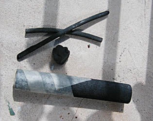

Le
dessin préparatoire
A Niaux (Ariège,
France) vers 12 000 BC, on utilisait déjà des torches calcinées pour poser
à même la roche les bases des peintures pariétales.
De nos jours, le dessin préparatoire est réalisé sur une
toile, un papier ou tout autre support avant l'application de la peinture afin
de poser des points de repère et, parfois, de déceler des erreurs de
composition.

La
solution classique : fusain, graphite
Le
graphite
donne d'assez mauvais résultats lorsque le tableau est
destiné à être peint à l'huile ou, plus rarement, à la cire ou tout autre
liant gras. Seul le fusain est assez maigre pour ne jamais entraîner d'affreuses coulures au contact des huiles, corps gras et
essences. Pour qui souhaite absolument utiliser du graphite, nous conseillons la
qualité la plus maigre possible (6H, 8H).
L'acrylique ou tout autre
peinture aqueuse pourraient également mal réagir à
un tracé réalisé avec un crayon ou une craie trop grasse.
Mais même naturel, non reconstitué (voir
photo), le fusain lui-même laisse des traces poudreuses dans les jus
initiaux. Il est souhaitable d'estomper beaucoup les tracés avant de commencer
à peindre. Lors du travail au fusain proprement dit, utiliser une gomme mie de
pain bien propre, sans graisses, ou mieux encore, une gomme chaussette,
outil parfaitement adapté à cet emploi.
Solution
moderne
Un tracé préparatoire
peut être directement réalisé avec une pâte extrêmement diluée, effaçable au chiffon, plutôt qu'avec un
fusain dont la poudre noire,
même estompée, sera de toutes manières étalée par vos premiers coups de
brosse, salissant vos premières couleurs.
Le tracé initial très délayé apporte de plus la possibilité
de poser quelques points de repères chromatiques. Le fusain peut être
réservé aux dessins préparatoires sur papier séparé, pour lesquels il est parfait.
Lire l'article "jus" du glossaire.
Aujourd'hui,
nombreux sont les enseignants qui conseillent ce procédé dont l'intérêt est
aussi d'ordre pédagogique. L'élève apprend à désacraliser la peinture,
employée en l'occurrence "comme pour dessiner". De plus, devant employer une pâte
très diluée, il apprend à travailler maigre aux premiers temps de la réalisation
de son tableau.
Variante
de ce procédé : l'emploi d'une barre (ou bâton) d'huile pour le tracé de
mise en place. Trois défauts se signalent particulièrement :
*
il devient vite
difficile de corriger
*
à moins de diluer systématiquement à l'aide d'une brosse
imprégnée d'essence, on est tout de suite
"dans la pâte", dans le gras
*
la miscibilité de
l'huile en barres avec la peinture à l'huile habituelle n'est pas toujours
garantie. Il faut faire quelques
essais, repérer un produit (une marque) qui correspond à vos exigences. Quant à la
bonne tenue des peintures aqueuses sur de telles surfaces, elle est du domaine de
l'improbable.
Quelle préparation pour
le dessin préparatoire ?
*
pour le fusain, la surface (gesso ou
autre) doit être poreuse, plâtreuse. Le fusain lui-même doit absolument
être tendre sans quoi il rayerait irrémédiablement les enduits.
*
pour les jus, les opinions sont partagées. Néanmoins, une surface bien
lisse (surcouche de liant synthétique pur,
par exemple)
permet d'effacer très facilement au chiffon, de "gommer"
littéralement les tracés malheureux.
Retour
début de page